Yaylalar, Seyir Ve Manzara Noktaları
Bağbaşı Yaylası ve Denizli Teleferik
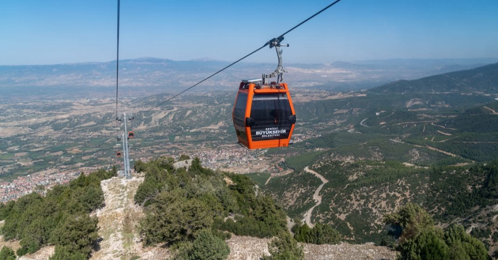
Denizli merkeze yaklaşık yarım saatlik bir mesafede bulunan Bağbaşı Mahallesi’nden teleferiğe biniyorsunuz ve Bağbaşı Yaylası’na çıkıyorsunuz.
Eğer Bağbaşı Yaylası’na teleferikle çıkmak istemezseniz, yukarıda bulunan ücretsiz servislerle de ulaşım sağlayabilirsiniz. Denizli,
Büyükşehir Belediyesi’nce yapılan 1500 metre uzunluğundaki 8 kişilik kabinler ile Bağbaşı Kent Ormanı‘ndan 1700 metre rakımlı o güzel ve muhteşem
Bağbaşı Yaylasına ulaşıyorsunuz. Teleferik üst istasyonda, restoran, kafeterya, Çocuk Oyun Alanları, Mangal & Piknik alanları, konaklamak isteyenler
gezginler için çadır alanları ve ahşap bungalovlar evler bulunmaktadır.
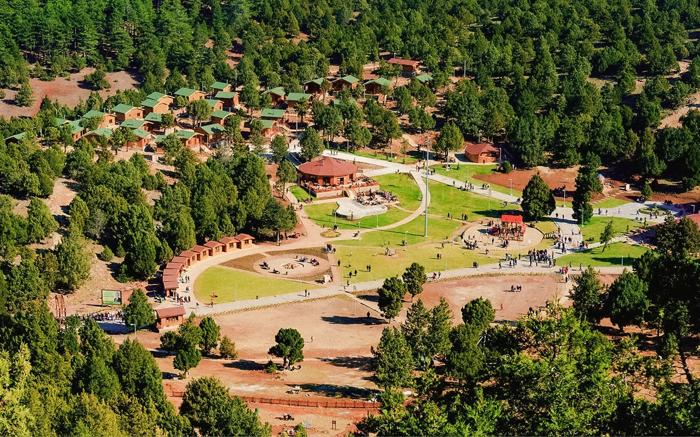
Teleferikler 8 kişilik olup, toplam 24 kabinden oluşuyor ve hiç beklemenize gerek bile kalmadan saniyesinde yenisi geliyor. Yaklaşık 7 dakikada yukarı,
çıkıyorsunuz ve karşılaştığınız manzarayla resmen büyüleniyorsunuz. Etraftaki yeşilliğin, dağın ve mükemmel doğanın etkisinden çıkmanız biraz zor olacak
gibi görünüyor. Yükseklik korkunuz yoksa tabii !
Teleferikle Denizli’nin muhteşem manzarasını doya doya seyredeceksiniz ancak bu yeterli mi, hayır! Yaylanın o tertemiz havası içinizi süper bir enerjiyle
dolduracak ve yaşadığınızı hissedeceksiniz. Üstelik yaylanın içerisinde yer alan birçok şeyden de yararlanacaksınız. Macera parkurunda dilediğiniz gibi
eğlenebilir, bungalov evlerde istediğiniz kadar kalabilirsiniz. Gerekirse kendi çadırınızı getirerekte konaklama şansı elde edebilirsiniz.
.jpg)
Ayrıca yaylanın içerisinde çocuk oyun alanı, çadır kampı, piknik alanı gibi daha pek çok imkan da
yer alıyor.
Kaçırmayın! Çadırlarda gözleme ayran keyfi yapmayı, Kır Lokantası veya kafeteryasında yöresel yemekler yemeyi unutmayın! Hem teleferik ile manzaranın
tadını çıkarın hem de yaylanın temiz havasını içinize çekin! Burası, Denizli’de gezilecek yerler listenizde kesinlikle olması gereken bir rota…
Adres: Kervansaray, Denizli Kent Ormanı, 20160 Pamukkale/Denizli
Topuklu Yaylası (Kovanoluk Yaylası)
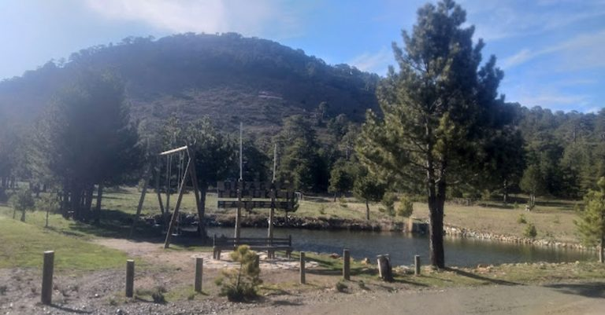
Şehir merkezinden 1,5 saatlik bir yolculukla ulaşılan Topuklu Yaylası, 1700 metre rakımı ile serin ve tertemiz havanın keyfini
sürmenize izin veriyor. Doğal kaynak suları ise buz buz gibi suları ile serinlemenizi sağlıyor. Zaman zaman yaylanın bulunduğu bölgede başta yağlı
güreşler olmak üzere çeşitli festivaller de gerçekleştirilmektedir.
Birçok kişi tarafından günübirlik bir gezi için tercih edilen Topuklu Yaylası’na dilerseniz konaklamalı olarak da gelebilirsiniz.
Konaklamak isterseniz çadır seçeneğini ya da bölgedeki pansiyonları tercih edebilirsiniz. Günübirlik geldiğinizde keyifli doğa yürüyüşleri yapabilir
ve sevdiklerinizle hoş sohbetler eşliğinde piknik yapabilirsiniz.
Adres: Karacaören, 20590 Beyağaç/Denizli
Seyir Tepesi Kent Ormanı
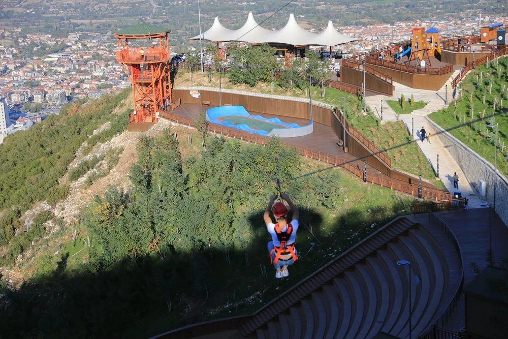
Tematik bir park olarak planlanan Seyir Tepesi, Denizli şehir merkezinde bulunan ve şehrin güzelliğini sonuna kadar izleyebileceğiniz yerlerden biridir.
Millet Bahçesi olarak tasarlanan 405 bin m² alan içinde çocuk oyun alanları, macera parkurları, spor alanları, dünyanın en büyük horoz heykeli, kaykay
alanları ve daha birçok imkan ziyaretçiler için cezbedici nitelik taşımaktadır.
Çok keyifli zaman geçirebileceğiniz bu yer, özellikle çocuklu aileler için Denizli’de gidilebilecek yerlerden arasında bulunmaktadır. Akşam ışıklandırmaları
parkın daha daha güzel bir görünüme kavuşmasını sağlamaktadır. Özellikle yaz akşamları serinlemek için bu güzel millet bahçesini değerlendirebilirsiniz.
Adres: Kınıklı mahallesi, kent ormanı. ormanı, Hüseyin Yılmaz Cd., 20160 Pamukkale/Denizli
Müzeler
Denizli Ufo Müzesi
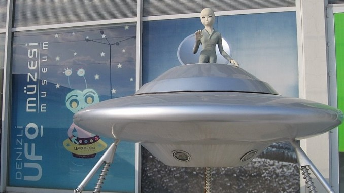
İstanbul’da 2002 yılında açılan Ufo Müzesi, 2005 yılında Denizli’ye taşınmış ve Denizli Ufo Müzesi olarak yeniden hizmet vermeye başlamıştır.
Türkiye’nin ilk ve tek, dünyanın ise dördüncü Uluslarası Ufo Müzesi olma özelliğine sahip. Ufo’lar ile ilgili tarihi olayların anlatıldığı bu müze, aynı
zamanda Avrupa’nın, Ortadoğu’nun ve Balkanlar’ın ilk Uluslararası Ufo Müzesi’dir. Diğer Ufo Müzeleri ise, Japonya, ABD ve İngiltere’de yer alıyor.
Pamukkale Hierapolis Arkeoloji Müzesi
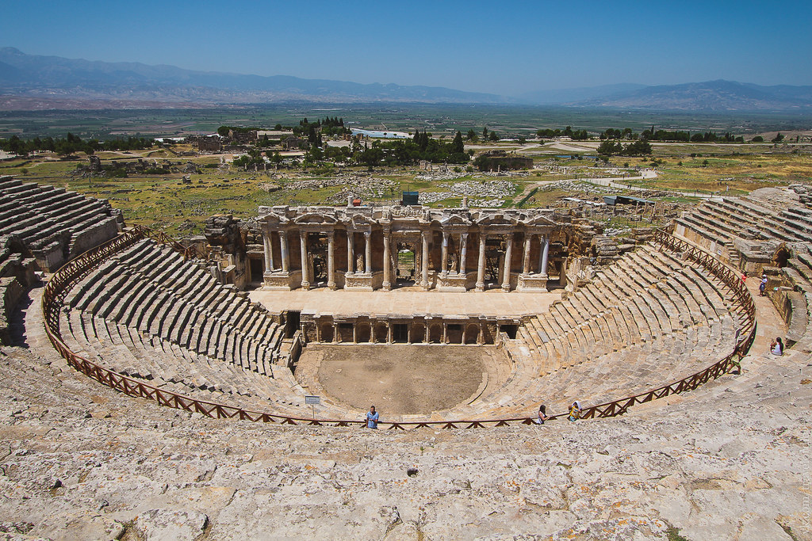
Hierapolis Antik Kenti’nin en büyük yapılarından biri olan Roma Hamamı, restore edilerek 1984 yılında Pamukkale Hierapolis Arkeoloji Müzesi olarak hizmet
vermeye başlamıştır. Müzede; Hierapolis Antik Kenti’nde yapılan kazı çalışmaları sonucunda elde edilen buluntuların yanı sıra çevresindeki kentlerden
(Laodikeia, Colossai, Tripolis, Attuda ve Lycos) toplanan eserler yer alıyor.
Müzenin en önemli bölümünü, Beycesultan Höyüğü’nden elde edilen
arkeolojik buluntular oluşturuyor. Ayrıca Caria, Pisidya ve Lidya bölgelerinin bazı yerleşimlerinden ortaya çıkan eserler de burada sergileniyor.
Pamukkale Hierapolis Arkeoloji Müzesi; Heykeller ve Lahitler Salonu, Küçük Buluntular Salonu ve Hierapolis Tiyatrosu Buluntuları Salonu olmak üzere üç
bölümden oluşuyor. Bu üç kapalı bölümden oluşan müzede, kütüphane ve açık teşhir alanları da yer alıyor. Roma dönemine ait
eserler ve heykellerin
sergilendiği müzenin açık alanında ise, daha çok taş ve mermer eserler sergileniyor.
Müzenin bölümleri;
Heykeller ve Lahitler Salonu’nda; Hierapolis ve Laodikeia Antik Kentleri’nin kazılarından çıkan lahitler, heykeller, mezar taşları, mimari sütun,
paye başlıkları ve yazıtlar sergileniyor. Yöreye ait mezar taşlarını ve pişmiş topraktan yapılan lahitleri gördüğünüzde bir hayli şaşıracaksınız. Bu
salondaki en önemli eser ise, Sidemara tipi lahittir. Ayrıca gladyatör dövüşleri ve boğa oyunlarını simgeleyen kabartmalar da yer alıyor.
Küçük Buluntular Salonu’nda; Denizli ve çevresindeki antik kentlerden elde edilen buluntular, kronolojik sıraya göre burada sergileniyor. Beycesultan
Höyüğü’nden çıkarılan eserler ise ayrı bir önem taşıyor. Salonun içerisinde; birçok farklı döneme ait pişmiş toprak kandiller, adak ve cam kapları, kolyeler,
madeni takılar, altın küpeler, altın yüzükler, altın elbise süsü, pişmiş toprak eserler, altın, gümüş ve bronz sikkeler yer alıyor. Geçmişten günümüze kadar
birçok uygarlığın eserlerini, küçük buluntularını, merak ediyorsanız, bu salon size hitap ediyor diyebiliriz.
Tiyatro Buluntuları Salonu’nda ise; Hierapolis Tiyatrosu’nun sahne binasını süsleyen eserler, restore edilerek bu salona getirilmiş. Eserler içerisinde;
Apollon ve Artemis’e ait mitolojik kabartmalar, heykeller, sfenksler, mimari kabartmalar, büst heykelleri, yazıtlar gibi daha pek çok şey sergileniyor.
Tüm görülmeye değer eserleriyle bu müze, yerli ve yabancı birçok ziyaretçinin ilgisini çekiyor. Denizli gezisinde mutlaka gidilmesi gereken bir yer olan müze,
hem Denizli’nin tarihine ışık tutacak hem de pek çok uygarlığın geçmişi hakkında bilgi sahibi olmanızı sağlayacak.
Adres: Sümer Mahallesi, 2259. Sokak No:12, 20020 Merkez/Pamukkale/Denizli
Atatürk Evi ve Etnografya Müzesi
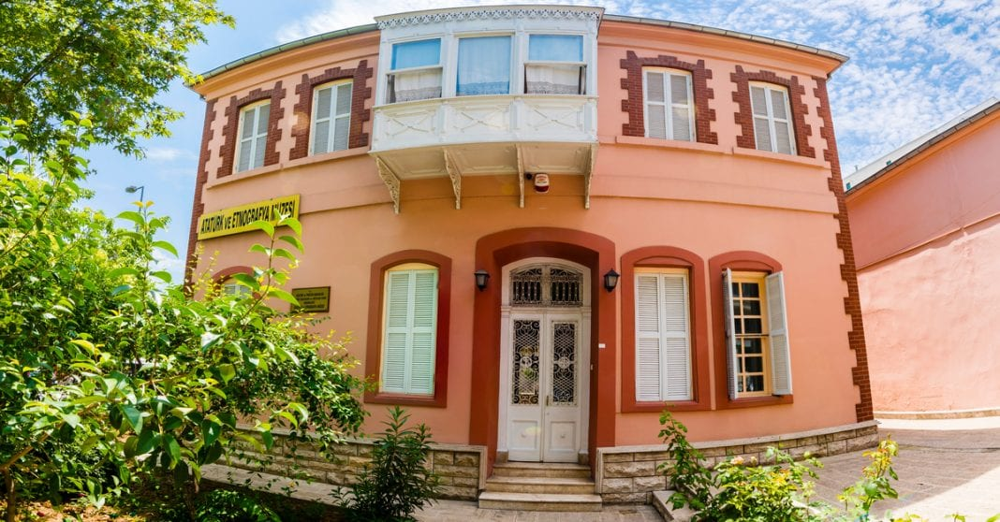
Denizli’nin Uçancıbaşı Mahallesi’nde yer alan binanın ne zaman yapıldığı tam olarak bilinmese de, 19. yüzyıl sonlarında inşa edildiği tahmin ediliyor.
Cumhuriyetin ilk yıllarında parti binası olarak kullanılan bina, Mustafa Kemal Atatürk’ün 1931 yılında Denizli’ye geldiğinde burada bir gece konuk edilmesiyle
biliniyor. İki katlı bir yapı olan bu bina, 1950 yılından sonra Verem Savaş Dispanseri olarak hizmet vermeye başlamıştır. Daha sonraki yıllarda ise,
Kültür Bakanlığı’na devredilmiş ve 1984 yılında Atatürk ve Etnografya Müzesi olarak faaliyet göstermeye başlamıştır.
Müzenin bölümleri; Alt katında etnografik eserler sergilenen müzenin odalarında; gümüş ve bafon kadın takıları, işlemeli kadın cepkenleri, el işlemeleri ile
fincan zarfları, ahşap oyma hat örnekler, tüfekler, kılıçlar, yatağan palaları, tabancalar, işlemeli kadın giysileri, geleneksel el işlemeleri gibi eserler
sergilenmekte.
Müzenin üst katında ise; Atatürk’e ait eserlerin sergilendiği odalar ile geleneksel Denizli evi olarak düzenlenen odalar yer alıyor. Atatürk’ün Denizli’yi
ziyaret ettiği sırada kaldığı oda; çalışma odası olarak dizayn edilmiş ve içerisinde divan, çalışma masası, Atatürk’ün Denizli’de çekilmiş fotoğrafları ile
cam eşyaların yer aldığı camlı bir dolap sergileniyor. Diğer oda ise; Atatürk’ün yatak odasıdır ve içerisinde karyola, ot yatak, telefon ve aynalı elbise
dolabı sergileniyor.
İçerisinde daha pek çok önemli eserlerin sergilendiği müzeyi, Denizli seyahatinizde kesinlikle ziyaret etmelisiniz. Atatürk’e ait eşyaları ve odalarını
yakından görmek, hissetmek ve özlem duymak… Mutlaka gidilmesi ve yaşanılması gereken duygulardır bunlar.
Adres: Saraylar Mh., Gazi Mustafa Kemal Bulv. No:70, 20100 Bayramyeri/Merkezefendi/Denizli
Bez Bebek Evi Müzesi
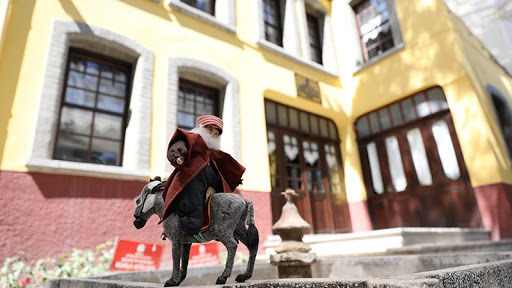
Denizli’nin tarihi yapılarından olan Balcı Evi Konağı, yangınla harabeye dönünce, buraya sahip çıkılarak önemli bir projeye el atılmış. Bina restore edilmiş
ve Folklorik Bez Bebek Müzesi’ne dönüştürülmüş. Emekli öğretmen Zeynep Karaaslan’ın yaptığı 500’den fazla bez bebeğin sergilendiği müze, Türkiye’de tek müze,
olma özelliğine sahip. Sadece, Türk folklorunu tanıtan bebekler değil, aynı zamanda dünya folklorunu tanıtan bebekler de içerisinde yer alıyor. Ayrıca müzede,
çocuklar için kukla gösterilerinin düzenlenmesi de hem sizi hem de çocuklarınızı mutlu edecek cinsten.
Adres: 15 Mayıs, 789. Sk. No:7, 20150 Denizli Merkez/Denizli*Doğa İçinde Gezilecek Yerler
Yeşil Alanlar/Parklar
Honaz Dağı Milli Parkı
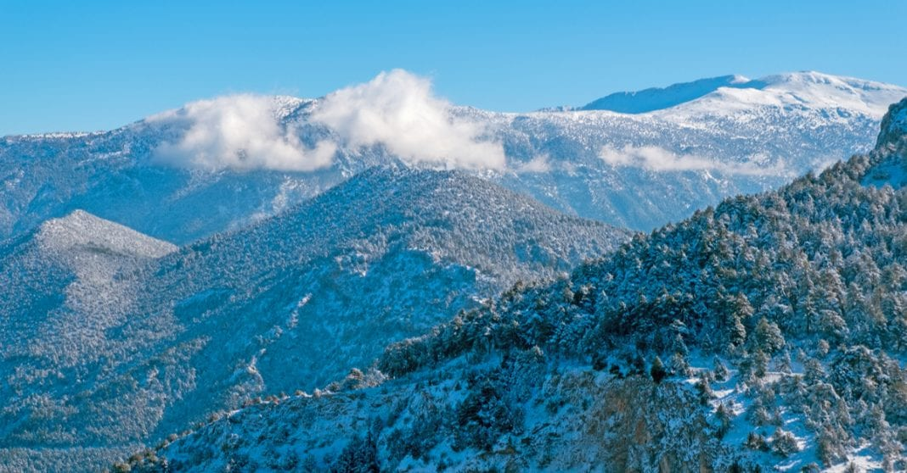
Honaz Dağı Milli Parkı; Honaz, Pamukkale ve Serinhisar ilçe sınırlarında bulunan Honaz Dağı ve çevresinden oluşuyor. Ege Bölgesi’nin en yüksek noktası
olan Honaz Dağı, 1995 yılında milli park olarak ilan edilmiştir. Flora, fauna ve jeolojik olarak oldukça zengin bir yapıya sahip olan parkta, Akdeniz
iklimi görülmektedir.
Ormanlarla kaplı olan dağda, özel iklim koşulları sebebiyle bitki çeşitliliği fazla olup, diğer alanlara göre daha çok bitki türü yer almakta. İçerisinde;
endemik bitki türleri, yaban keçisi, yaban domuzu, porsuk, tilki, tavşan, porsuk ile birlikte 4 çeşit sürüngen ve 64 kuş türü bulunuyor. Bunun dışında,
kayalık dik yamaçları, şelaleleri ve jeolojik özellikleri bakımından da olağanüstü bir doğal güzelliğe sahiptir.
Parkın içerisinde ve çevresinde yer alan günübirlik konaklama tesislerinden yararlanabilirsiniz. Üstelik doğa yürüyüşleri yaparak doğayla iç içe
olabilir ya da kamp yaparak daha uzun süre kalıp, keyifli dakikalar geçirebilirsiniz.
Adres: Honaz Dağı Milli Parkı Yolu, 20430 Honaz/Denizli
Çamlık Parkı

Denizli merkeze oldukça yakın bir mesafede yer alan Çamlık Parkı, günübirlik gezmek ve piknik yapmak için oldukça uygun bir yerdir. Yemyeşil kızılçam ormanı
ile kaplı olan park, aynı zamanda Pamukkale Üniversitesi Kampüsüne bitişik olup, gece pikniği olma özelliğine sahiptir. Emniyet altında ve çok iyi
aydınlatılmış olmasına borçludur bu durumu.
Neden gitmeliyim? Parkın içerisinde; kır gazinosu, büfe, otopark, çocuk oyun alanı, çeşme, tuvalet, yağmur barınağı, gölet, hayvanat bahçesi, ankesörlü
telefon, koşu ve yürüyüş parkuru, piknik alanları ve paintball sahası yer alıyor. Ayrıca parkın bitki örtüsü kızılçam, yalancı akasya, piramidal, dallı
servi ve akçaağaç gibi türler olup, hepsini yakından görme ve tanıma şansı elde edebiliyorsunuz. Parka gelmeyi düşünürseniz; Mayıs-Eylül dönemlerinde
gelmenizi tavsiye ediyoruz.
Kaçırmayın! Parkın çıkışındaki Seyir Kalesi’ne gidip, muhteşem manzarayı seyretmelisiniz. Eskiden sadece yürüyüş yapmak için çıkılan kale, son zamanlarda
düzenlenmeye gidilerek herkesin uğradığı bir yer haline gelmiştir. Yapılan düzenlemelerle bölgeye pek çok egzersiz aleti ve dinlenme yerleri konulmuştur. Ayrıca doğa harikası olan Saklı Göl’ü de listeye eklemeyi unutmayın!
Adres: Çamlaraltı, 20070 Merkez/Pamukkale/Denizli
Kefe Yaylası Çadır Kamping
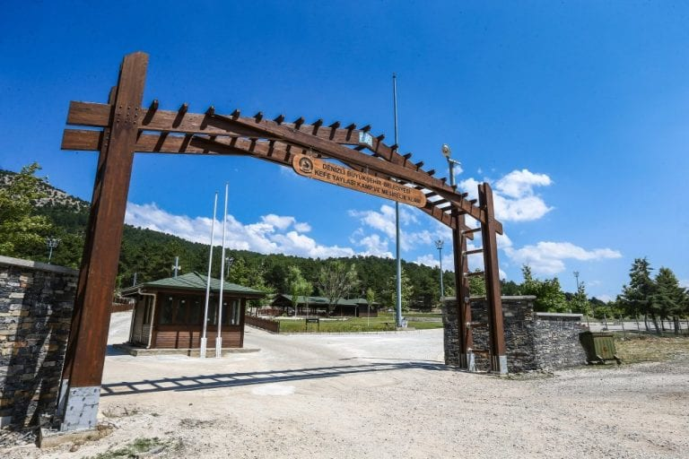
Denizli Yatağan ile Honaz’ın bazı köylerini birbirine bağlayan asfalt yol üzerinde yer alan Kefe Yaylası, mutlaka ziyaret edilmesi gereken harika bir
rotadır. Yaylada karaçam, kızılçam ve ardıç gibi pek çok ağaç bulunuyor ve adeta sizlere görsel şölen sunuyor.
Neden gitmeliyim? Yaylaya gediğinizde; kesinlikle kamp imkanlarından yararlanmalısınız. İster kendi çadırınızı getirebilir ister hazır kurulu olan çadırlardan
birini kiralayabilirsiniz. Çadır alanlarının içerisinde; elektrik imkanı, su, tuvalet, duş, restoran, market, kasap, çeşitli spor alanları, piknik alanları
ve çocuk oyun parkı yer alıyor. Ayrıca her yıl Ağustos ayının ilk haftasında, bu yaylada önemli etkinlikler yapılıyor. Temiz ve bol oksijenli havayı solumak,
huzur ve sakinliği tatmak için geleceğiniz bu yaylada, belki güzel etkinliklere denk gelirsiniz.
Adres: Kocapınar, 20430 Serinhisar/Denizli
İncilipınar Parkı
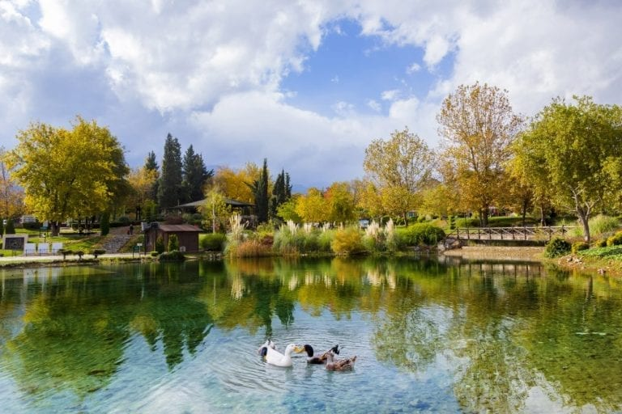
Geçmişte kendi haline bırakılmış, harap bir halde olan İncilipınar Parkı, belediye çalışmalarıyla düzenlenmeye gidilerek, büyük bir park ve dinlenme
alanına dönüşmüştür. Parkın içerisinde; göletler, kameriyeler, koşu parkuru, çocuk oyun alanları ve dinlenme noktaları yer alıyor. Denizli’nin en çok tercih
edilen dinlenme ve oyun alanı olmayı başaran park, yemyeşil alanı ile içinize huzur dolu bir atmosfer katacak. Ziyaretçilerine keyifli anlar yaşatacan
İncilipınar Parkı’nda, doya doya dolaşın, dinlenin ve bolca fotoğraf çekilin.
Adres: İncilipınar, 20150 Denizli Merkez/Denizli
Bağbaşı Kent Ormanı
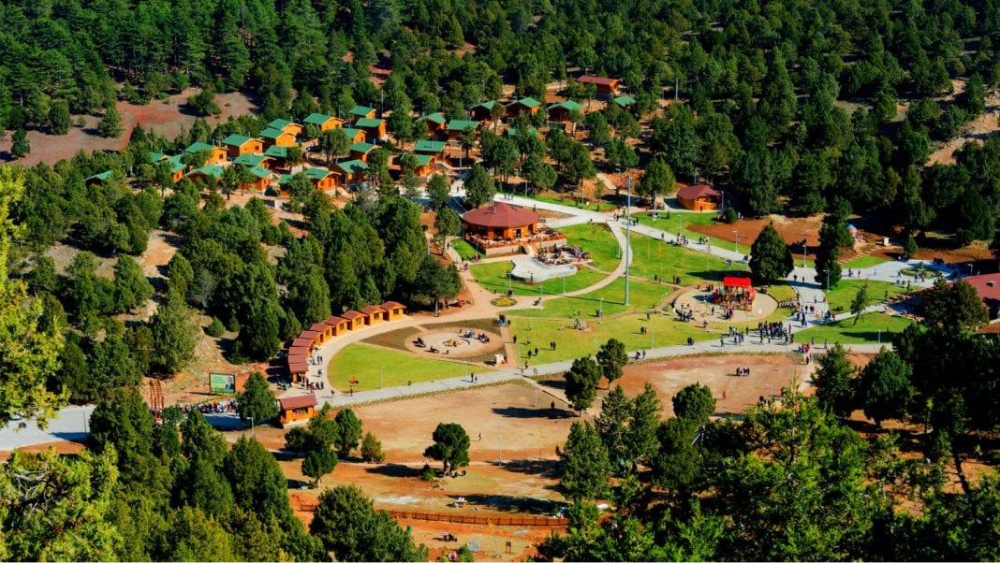
Bağbaşı’nda yer alan Bağbaşı Kent Ormanı, Denizli şehir merkezine 2 km mesafede bulunuyor. 1984 yılında açılan kent ormanı, pek çok hayvan ve bitki türüne
ev sahipliği yapıyor. Kızılçam, fıstık çamı, sedir, mavi ve kara servi ağaçlarından oluşan doğal bir orman olan alanda; tarihi manastır çeşmesi, voleybol sahası,
çocuk oyun alanları, dinlenme yerleri ve kamelyalar bulunuyor. Yani bir nevi doğal ormanla suni orman iç içe geçmiş gibi düşünebilirsiniz.
Bunların dışında, ormanın içerisinde; keklik, tavşan, tilki, çakal, üveyik, ötücü kuşlar, tahtalı güvercin, ağaçkakan, saksağan, kumru, karga, kuzgun ve geyik
gibi birçok hayvan türüne de rastalayabilirsiniz. Çınar ve ceviz ağaçlarının yanı sıra sandal, ahlat, akçakesme, yabani zeytin, sistus, ladin ve kekik gibi daha
pek çok bitki türüne, bu ormanda rastlamanız mümkün.
Bağbaşı Kent Ormanı’nda çeşit çeşit bitki ve hayvan türlerine rastladığınızda, rahatsız etmeden ya da zarar vermeden inceleyip gözlemleyebilirsiniz.
Harika doğa fotoğrafları çekeceğiniz gibi ormanın yürüyüş yolunda da doğa gezisine çıkabilirsiniz.
Adres: Kervansaray, Denizli Kent Ormanı, 20160 Pamukkale/Denizli
Yunus Emre Parkı
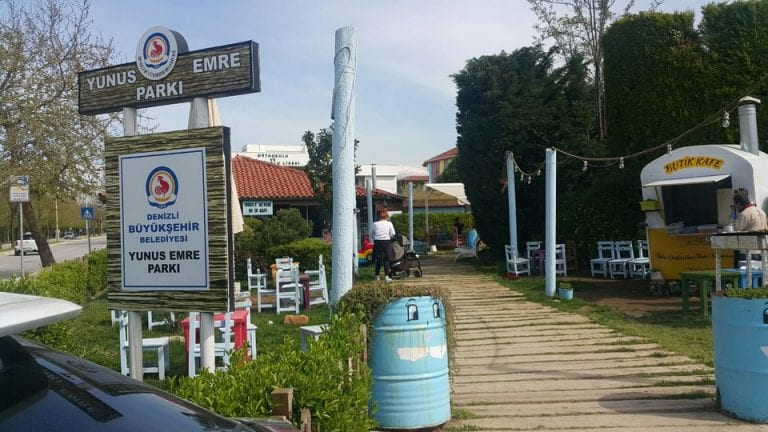
Denizli’nin en büyük parklarından biri olan Yunus Emre Parkı, yerli ve yabancı birçok turistin yeni gözdesi desek, yanılmayız sanırım. Parkın içerisinde;
basketbol sahası, tenis sahası, koşu yolu, fitness aletleri, kafeterya, jimnastik köşesi, yeşil alanlar, gölet ve daha pek çok şey yer alıyor.
Şehrin yoğunluğundan ve kalabalığından uzaklaşmak için sıklıkla tercih edilen park, sunduğu imkanlarla oldukça seviliyor. Sabah saatlerinde
bir hayli hareketli olan parka, piknik amacıyla gelen ziyaretçileri de görmek mümkün. Yeşilliği ile sakinleşeceğiniz, spor sahalarında oyun oynayarak vakit
geçirip eğleneceğiniz bir yerdir. Aynı zamanda çocuklarınız için tasarlanan oyun alanlarında, onlar doyasıya eğlenirken sizde rahat bir nefes alacaksınız.
Adres: Yenişehir, 20125 Denizli Merkez/Denizli
Ornaz Vadisi
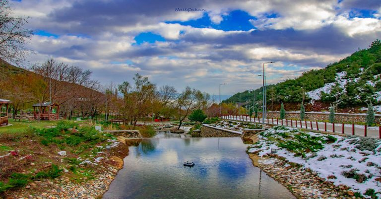
Muhteşem bir doğal yaşam alanı olan Ornaz Vadisi’nde birçok şelale, dere ve yeşil alan bulunmaktadır. Şehir merkezine çok yakın konumu ise burasını hem yerli
halk için hem de şehir dışından gelenler için cazip bir tabiat harikası haline getirmektedir. Vadide piknik olanaklarının yanı sıra yeme ve içme gibi
ihtiyaçlarınızı karşılayabileceğiniz çeşitli kafe ve restoranlar da hizmet vermektedir. Vadiye ulaşım için kendi aracınızı kullanabileceğiniz gibi toplu taşıma
araçlarını da değerlendirmek mümkün.
Genellikle yaz aylarında yoğun ziyaretçi akınına uğrayan Ornaz Vadisi, doa yürüyüşleri yapmak ve piknik yaparak eğlenmek isteyenler için Denizli’de görülmesi
gereken yerler arasında bulunmaktadır. Dileyen ziyaretçiler burada aynı zamanda harika doğa fotoğrafları de çekebilirler.
Adres: Başkarcı, Erenler Cd., 20050 Merkezefendi/Denizli
Adalet Parkı
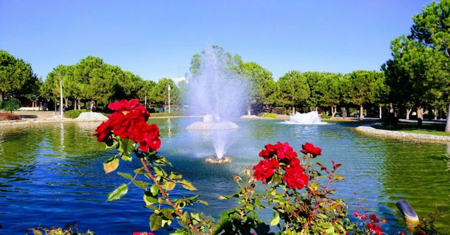
160 bin m²’nin üzerinde bir alana kurulu olan Adalet Parkı, Denizli’nin ikinci büyük parkı olma özelliğini taşımaktadır. Park içinde binlerce kalıcı ağacın yanı
sıra 50 binin üzerinede sezonluk çiçekler bulunmaktadır ve bu da bahçenin özellikle bahar aylarında muhteşem renklere bürünmesini sağlamaktadır.
Muhteşem bir yapay gölet başta olmak üzere süs havuzları, çocuklar için oyun alanları, yürüyüş yolları gibi birçok imkana sahip olan Adalet Parkı, Denizli’de
keyifli vakit geçirebileceğiniz ve dinlenebileceğiniz destinasyonlar arasında bulunmaktadır. Parkın içinde aynı zamanda dönem dönem farklı etkinliklerin
gerçekleştirildiği 650 kişilik kapasiteye sahip amfi tiyatro da burayı cazip kılan şeylerden biridir.
Adres: Bahçelievler, 29 Ekim Blv. No:211, 20040 Denizli Merkez/Denizli
Aqua Parklar
Çavuşoğlu Aquapark
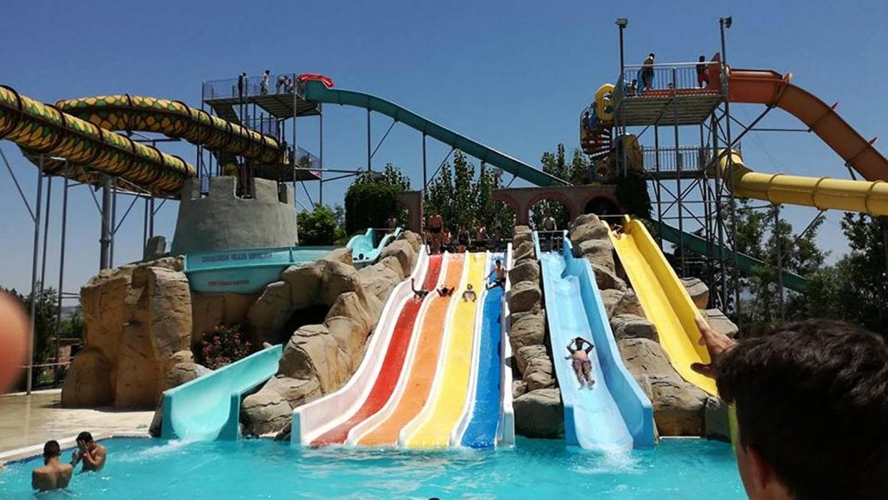
Denizli’ye 10 dakikalık bir mesafede yer alan Çavuşoğlu Aquapark, çocuklarınızla eğlenebileceğiniz bir diğer alternatiftir. İçerisinde; yüzme havuzu,
çocuk havuzu, kum havuzu, jakuzi, birbirinden farklı su kaydırakları ve havuzları ile daha pek çok eğlence alanı yer alıyor. Bunun dışında, restoran ve
büfelerden, dilediğiniz gibi yararlanabiliyorsunuz.
Kayak Merkezleri
Nikfer Kayak Merkezi
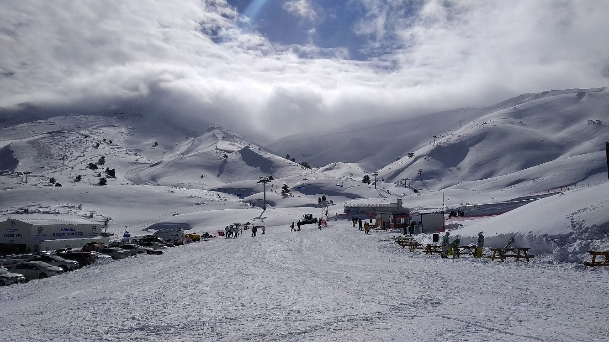
Tavas - Nikfer'de Denizli'nin 2. beyaz cenneti olan kayak merkezimiz siz Denizli halkımızın hizmetine girmiştir. Denizli şehir merkezine 85 kilometre uzaklıktaki
tesislerde acemi, orta seviye ve profesyoneller için 12 kilometre uzunluğunda 3 pist bulunuyor. Kayakseverlere kesintisiz kayak ve snowboard imkanı sunan Denizli
Kayak Merkezi'nde saatte bin 500 kişi taşıma kapasiteli iki telesiyej ve teleski hizmet veriyor. Merkezde mevsim şartlarına göre 3,5 ay kayak yapılabiliyor.
Geçen yıl kış sezonunda 50 bin kişinin kayak yaptığı merkezde telesiyejle dağın zirvesine çıkan ziyaretçiler, enfes manzaralar sunan bölgeyi kuş bakışı izleyebiliyor.
Hayvanat Bahçeleri
Çamlık Hayvanat Bahçesi
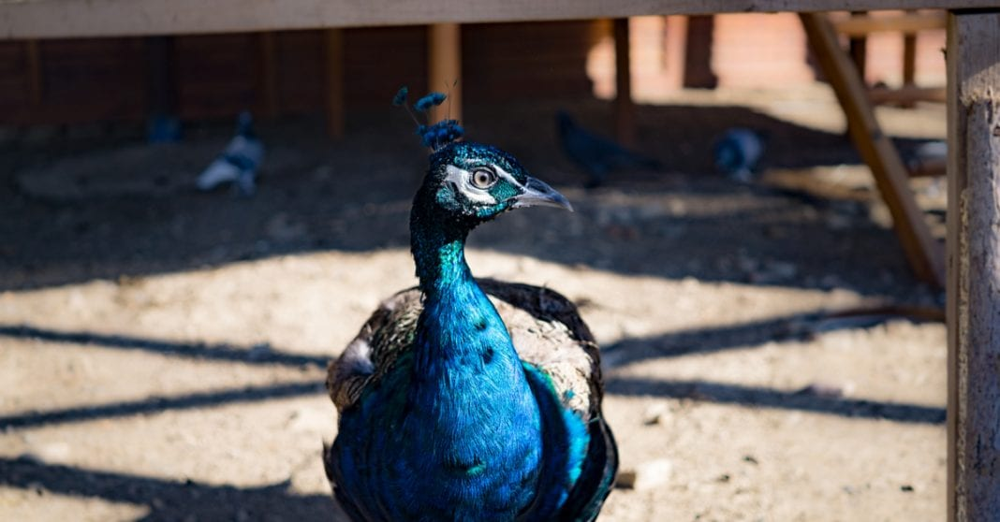
Çamlık Parkı’nda yer alan bu hayvanat bahçesi, çocuklarınız için neşe kaynağı olacak. Üstelik yenilenmiş haliyle! Hayvan barınakları yenilenmiş, yeni barınaklar
ve büfe yapılmış, güvenlik önlemleri alınmış, ördekler için mini gölet yapılmış, hayvan çeşitleri çoğaltılmış ve ahşap yollar yapılmış. İçerisinde çok fazla seçenek
olmasa da, çocuklarınızla eğlenmek için bir kaçış noktası olmayı başarmıştır.
Adres: Mehmetçik, 20150 Denizli Merkez/Denizli
Sıcak Hava Balonu
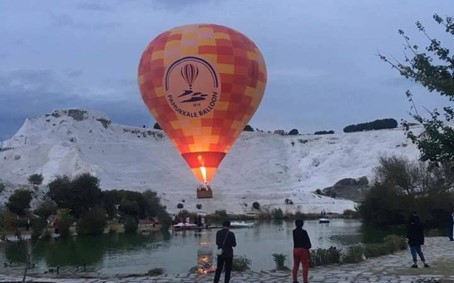
Pamukkale'nin ünlü beyaz travertenleri ve antik Hierapolis kalıntıları üzerinde uçacağınız Pamukkale sıcak hava balonu uçuşunun eşsiz deneyiminin tadını
çıkarın. Sitenin yukarıya doğru sürüklenme perspektifi inanılmaz!
Pamukkale sıcak hava balonu uçuşu, yaşa veya daha önce sıcak hava balonuyla uçmuş olup
olmadığına bakılmaksızın herkes için harika bir deneyimdir. Rüzgarla birlikte sürüklenirken neredeyse hiç hareket hissi olmadan, balon uçurmanın coşkusu
ve yumuşaklığından daha büyük bir his yoktur.
Pamukkale, Türkiye'yi ziyaret eden her ziyaretçinin mutlaka görmesi gereken bir yerdir ve UNESCO
tarafından dünya mirası listesinde yer almaktadır. Sabahın erken saatlerinde Hierapolis harabeleri, travertenler ve güzel Menderes Vadisi üzerinde sıcak
hava balonu uçuşu, bu inanılmaz siteye başka bir bakış açısı kazandırmanın heyecan verici bir yoludur.
15-20 yolcu kapasiteli sepetler ile konforlu,
güvenli, lisanslı, profesyonel pilotlar ve deneyimli personel tarafından kaliteli ekipmanlarla gerçekleştirilen uçuşlar sunan Pamukkale bölgesindeki ilk
balon uçuş sağlayıcısı olmaktan gurur duyuyoruz.
Yamaç Paraşütü
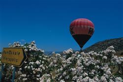
Honaz Dağı'nın geniş bir ovada tek başına 2500 metre civarında yükseltisi olması önemli bir coğrafi özelliktir. Bu özelliği nedeniyle Paraşüt, Delta (Yelken),
Kanat, Yamaç Paraşütü gibi sporlar için çok uygundur. 1997 yılında dünyada ilk kez yapılmış olan 1. Dünya Hava Oyunları Honaz Dağı ve Çökelez Dağı eteklerinde
Pamukkale ören yerinde gerçekleştirilmiştir. Halen bu yörelerde yamaç paraşütü yapılabilmektedir.
Yamaç Paraşütü Parkutları
-Çökelez Dağı ve Eteklerinden Pamukkale Ören Yeri Sınırına Kadar
-Dodurgalar Keloğlan Mağarası
-Göktepe Dağı-Göveçlik Kasabası
-Tavas ilçesi, Bozdağ
-Çameli-Yaylacık Dağı
Pamukkale Travertenleri
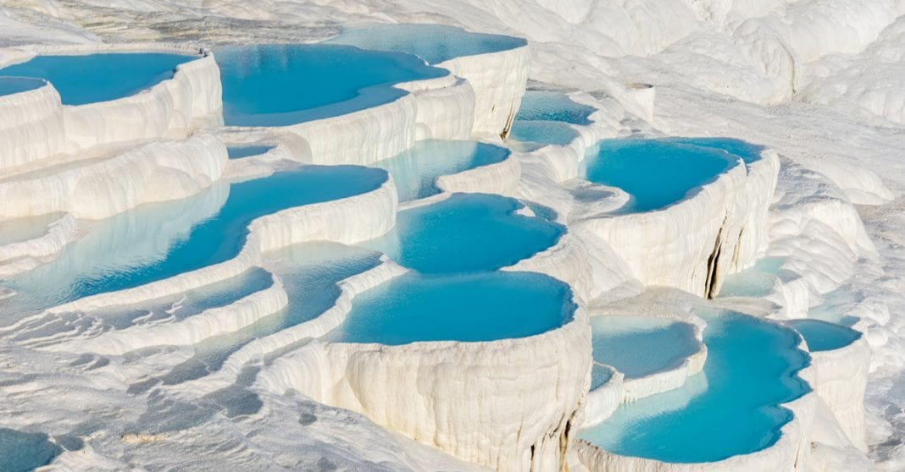
Denizli merkeze 18 km uzaklıkta yer alan Pamukkale Travertenleri, insanı şaşkına çeviren bir doğal güzelliğe sahiptir. Kuşkusuz herkes tarafından bilinen ve
mutlaka ziyaret edilmesi gereken yerlerin başında geliyor desek, yanılmayız sanırım. Her yıl milyonlarca insanın akınına uğrayan travertenler, pamuğa benzeyen
görüntüsü ve doğal oluşumuyla muhteşem ötesi bir yerdir. Bu yüzden UNESCO Dünya Mirası Listesi’nde yer almasına şaşırmamalı!
Kaynak sulardan ve traverten teraslı tepelerden oluşan Pamukkale Travertenleri, ”Beyaz Cennet” olarak adlandırılıyor ve yaklaşık bin yıldır kaplıca hizmeti
veriyor. Travertenler, 50 metre yüksekliğinde, 3 km uzunluğunda ve 250-600 metre genişliğinde olup, hem Türkiye’nin hem de Denizli’nin sembollerinden biridir.
Oluşumu; Travertenlerin oluşumunu termal kaynakların sağladığını söyleyerek, daha detaylı anlatıma geçebiliriz. Kaynaktan çıkan termal su, belli bir mesafe kat
ederek travertenlerin başına geliyor ve travertenlerin katlarından dökülmeye başlıyor. Kalsiyum karbonatla doymuş su, güneşin altında buharlaştığı için ilk
önce jel halinde beyaz travertenlerin pamuksu görüntüsünü ortaya çıkarıyor, sonra da katılaşarak yüzeyi kristalleşmiş kayalara dönüştürüyor. İçerisinde;
kalsiyum karbonat dışında, sülfat, sodyum, demir, potasyum, magnezyum ve serbest karbondioksit yer alıyor.
Travertenlerin su sıcaklığı 35-100 derece arasında değişiyor ve burası tam 17 adet sıcak su terasına ev sahipliği yapıyor. Antik çağdan günümüze kadar,
neredeyse 2300 yıldır, şifahane olarak da kullanıldığını söylemeden geçemeyiz. Bu şifalı suların; romatizmaya, cilt, kalp ve damar hastalıkları gibi daha pek
çok hastalığa iyi geldiği de biliniyor.